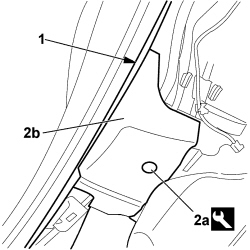
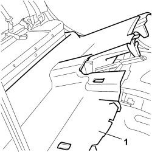

7040L18 PASSENGER COMPARTMENT FLOOR REAR CARPET - R.R.
- Path
- Procedures > 70 FITTINGS > 7040 BODY INTERIOR FITTINGS AND TRIM > 7040L CABIN FLOOR COVERING > 7040L18 PASSENGER COMPARTMENT FLOOR REAR CARPET - R.R.
- Kind
- repair procedure (removal / refitting; the operation number is the code)
- Applies to
- all engines; all production periods
- Interactive page
- https://sloeber94.github.io/elrnDB-fCrm/en/#/194001074
Applies to: all engines; all production periods
 Removing
Removing
 Refitting
Refitting- Turn the ignition key to the OFF position and extract it;
- Disconnect the battery leads and insulate them. Wait for 10 minutes before continuing.
Description | Connector | |
|---|---|---|
BATTERY |
(Both)
Op. 7040A65 CONSOLE SIDE CLOSING (ONE) - R.R.
Op. 5010C32 AIR VENT ON TUNNEL COVER FOR REAR SEATS - R.R.
Op. 7040L28 TUNNEL SWITCH PANEL - R R
Op. 5520A10 IGNITION SWITCH ASSEMBLY - R+R
Op. 7040L20 TUNNEL COVER - R.R
(Both)
Op. 7045A10 FRONT SEAT (ONE), LEFT OR RIGHT - R.R.
Op. 7040L44 REAR DOOR RUNNING BOARD (ONE), LEFT OR RIGHT - R.R.
Op. 7040H36 CENTRE PILLAR LOWER ELEMENT (ONE), LEFT OR RIGHT - R.R
Op. 7050A20 ONE-PIECE REAR SEAT CUSHION - R.R.
Working on both sides:
1. Partly release the rear door housing seal by the edge of the rear carpet.
2. Using the special tool, release the buttons (2a) retaining the carpet to the floor (2b).
Tool | Description | Function | Validity |
|---|---|---|---|
1878077000 | Knife | Retainer removal |

Applies to: all engines; all production periods
1. Remove the rear carpet from the passenger compartment floor.

Applies to: all engines; all production periods
Refitting
Removing- Check that the passenger compartment floor rear carpet is not damaged.
- Place the rear carpet in position, position the edges of the carpet and fit the buttons retaining the carpet to the floor.
- Fit the door housing seal sections.
Op. 7050A20 ONE-PIECE REAR SEAT CUSHION - R.R.
Op. 7040H36 CENTRE PILLAR LOWER ELEMENT (ONE), LEFT OR RIGHT - R.R
Op. 7040L44 REAR DOOR RUNNING BOARD (ONE), LEFT OR RIGHT - R.R.
(Both)
Op. 7045A10 FRONT SEAT (ONE), LEFT OR RIGHT - R.R.
Op. 7040L20 TUNNEL COVER - R.R
Op. 5520A10 IGNITION SWITCH ASSEMBLY - R+R
Op. 7040L28 TUNNEL SWITCH PANEL - R R
Op. 5010C32 AIR VENT ON TUNNEL COVER FOR REAR SEATS - R.R.
(Both)
Op. 7040A65 CONSOLE SIDE CLOSING (ONE) - R.R.
- Reconnect the negative and positive battery terminals.
Description | Connector | |
|---|---|---|
BATTERY |
Topics linked from this page (11)
- 5010C32 AIR VENT ON TUNNEL COVER FOR REAR SEATS - R.R.
- 5520A10 IGNITION SWITCH ASSEMBLY - R+R
- 5580C AIR BAG SYSTEM
- 7040A65 CONSOLE SIDE CLOSING (ONE) - R.R.
- 7040H36 CENTRE PILLAR LOWER ELEMENT (ONE), LEFT OR RIGHT - R.R
- 7040L20 TUNNEL COVER - R.R
- 7040L28 TUNNEL SWITCH PANEL - R R
- 7040L44 REAR DOOR RUNNING BOARD (ONE), LEFT OR RIGHT - R.R.
- 7045A10 FRONT SEAT (ONE), LEFT OR RIGHT - R.R.
- 7050A20 ONE-PIECE REAR SEAT CUSHION - R.R.
- A001 BATTERY